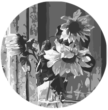
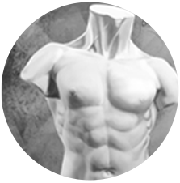
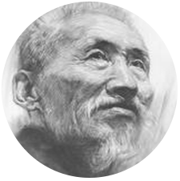
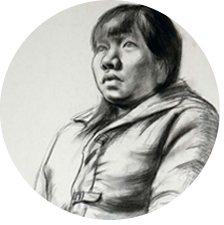
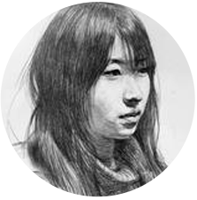

您的位置：首页 - 课程设置

CURRICULUM PROVISION
课 / 程 / 设 / 置

GLORY AND DREAME


01
PAINT STILLLIFE
静物写生
素描基础
7月专项练习 7.31月考
静物写生，对形体质感的表现主要靠笔触、线条和色调的对比变化，提高素描造型能力。
ytsinghua university academy of key colleges and universities as the main.
02
GYPSUM SKETCHES
石膏写生
素描基础
8月专项练习 8.31月考
石膏素描是学习素描的起步和入门，一件精美的石膏素描有利於培养和提高学生的审美能力
ytsinghua university academy of key colleges and main development whole sealing
03
GYPSUM SKETCHES
头像写生
素描提高
9月专项练习 9.30月考
众多美术院校在招生考试中多以头像默写来考察考生的绘画综合能力，以更好地选拔艺术人才。
ytsinghua university academy of key colleges and universities as the main.
04
GYPSUM SKETCHES
半身像写生
素描提高
10月专项练习10.31月考
素描人物半身像可以作为一种独立的艺术表现形式它的最高形式就是素描肖像画
ytsinghua university academy of key colleges and main development whole sealing
05
GYPSUM SKETCHES
头像默写
素描提高
11月专项练习 11.30月考
众多美术院校在招生考试中多以头像默写来考察考生的绘画综合能力，以更好地选拔优秀的人才。
ytsinghua university academy of key colleges and universities as the main.
2016-2018 http://www.hztmsart.com All Right Reserved.技术支持:ICON